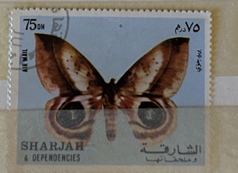
| SOURCE | TITLE| IMAGE MATCH | click to source page |
| Etsy | Framed Vintage Butterfly Stamp Art: Sharjah & Liberia - Etsy | 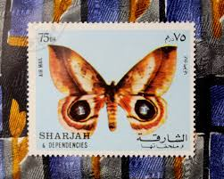 |
| Etsy | Buy Framed Vintage Butterfly Stamp Art: Sharjah & Liberia Online in India - Etsy | 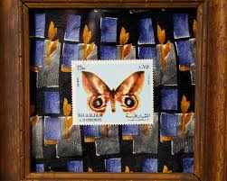 |
| mgroofingservices.com | Pink Saturn Moth Pseudodirphia Menander From Costa Rica - Framed Insect Display In Riker Mount Riker Mount Insect | 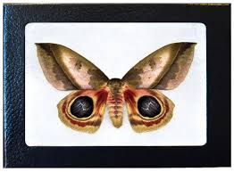 |
| Wikipedia | Automeris metzli - Wikipedia | 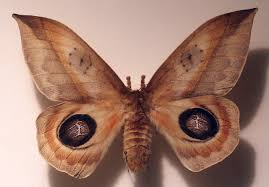 |
| What is the type of moth found in Austin, TX? | 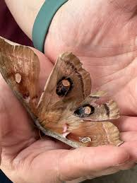 | |
| HipStamp | Chad 2011 Insects Butterfly Papillon Flower Animal Fauna Nature M/S Stamps (5) | Africa - Chad, General Issue Stamp / HipStamp | 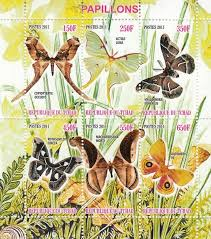 |
| dmc-nordic.com | Framed Butterfly Display Real Framed Butterfly Shadow Box - 4.7x4.7 Inch Taxidermy Display For Home Decor Shadow Box Display | 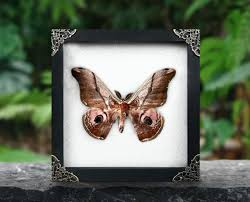 |
| One night while I was watching Downton Abby, I just about jumped out of my chair when I saw the necklace Lady Violet was wearing. When my mother in law passed she | 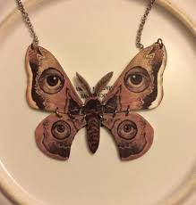 | |
| Gone71° N | European moths poster - Gone71° N | 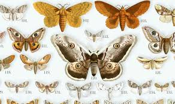 |
| Found Image Retail | Variety of Moths Vintage Image, Insects IS-145 – Found Image Press Inc. | 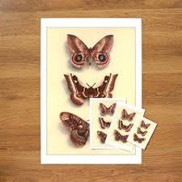 |
| eBay | Congo Butterfly Atlas Flower Orchid Souvenir Sheet of 4 Stamps Mint NH | eBay | 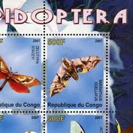 |
| Etsy | Automeris Metzli, Silkworm Moth, Moth From Mexico, Taxidermy Moth, Wall Deco, Entomology Present, Eyed Wings, Orange Moth 8"x8" - Etsy Canada | 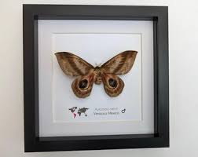 |
| TouchStamps | Souvenir Sheet: Othreis fullonia (Ivory Coast 2005) - TouchStamps | 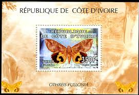 |
| Wikipedia | Automeris beckeri - Wikipedia | 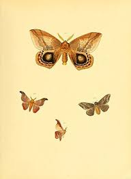 |
| Postage stamps, Post stamp, Butterfly stamp | 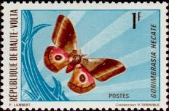 | |
| Imgur | My daughter raised this moth that looks like Dr Robotnik from Sonic The Hedgehog! - GIFs - Imgur | 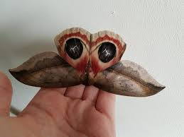 |
| Public Books | B-Sides: Gene Stratton-Porter's “A Girl of the Limberlost” - Public Books | 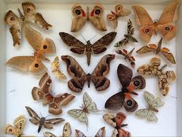 |
| laurarodley.com | Turn Left at Normal by Big Table Publishing – Laura Rodley | 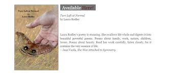 |
| fayencekarate.com | Lunar Moth Real Framed Saturn Moth - Argema Mittrei From Madagascar, Green & Yellow Specimen Mounted Luna Moth | 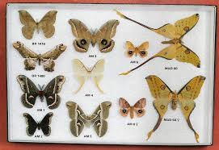 |
| Barcode of Life Data Systems (BOLD) | BOLD Systems: Taxonomy Browser - Automeris exigua {species} | 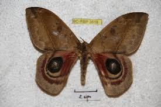 |
| BioOne Complete | Charles D. Michener (1918–2015): The Compleat Melittologist1 | 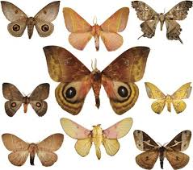 |
| YouTube | Beautiful Automeris moth - YouTube | 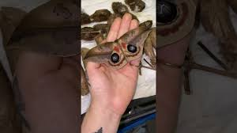 |
| Wikipedia | Urota – Wikipédia, a enciclopédia livre | 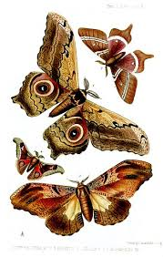 |
| Barcode of Life Data System (BOLD) | BOLD Systems: Taxonomy Browser - Automeris dagmarae {species} | 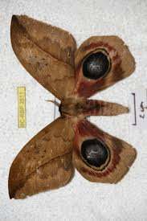 |
| Semantic Scholar | Journal of Threatened Taxa | 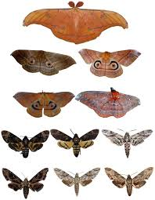 |
| springer.com | Can Saturniidae moths be bioindicators? Spatial and temporal distribution in the Brazilian savannah | Journal of Insect Conservation | Springer Nature Link | 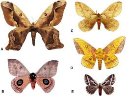 |
| After months of waiting we finally had our promethea silkmoth emerge on our tulip tree. She found a mate really fast! : r/NativePlantGardening | 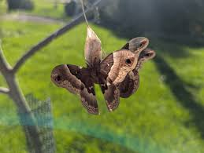 | |
| X | The adults of giant silk moths, or saturniids (members of family Saturniidae), live only a few weeks without feeding. | 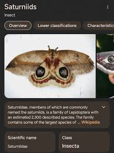 |
| Dreamstime.com | 134 Upper Volta Stock Photos - Free & Royalty-Free Stock Photos from Dreamstime | 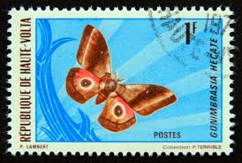 |
| WorthPoint | China Saturniidae 5X Caligula simla unmounted male moth | #39424493 | 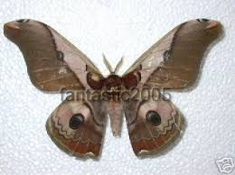 |
| 180 Tattoo Ideas | tattoos, cool tattoos, tattoo designs | 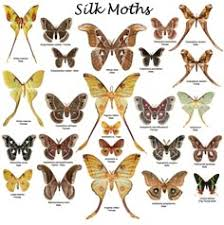 | |
| 4 pics 1 word answers | 4 pics 1 word level 1010 | 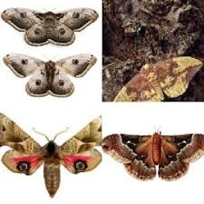 |
| Avion Thematics | Sweden 1979 Dragonfly 60 (from Wildlife Set) Unmounted Mint SG 1008, stamps on insects, stamps on dragonflies | 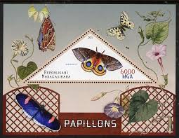 |
| Tripod (Lycos) | Automeris from French Guyana | 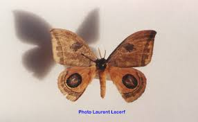 |
| Etsy | Caio - Etsy Singapore | 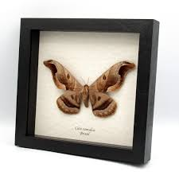 |
| A-Z Animals | Saturniidae Moth Animal Facts - Saturniidae - A-Z Animals | 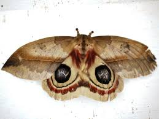 |
| Project Gutenberg | Illustrations of Exotic Entomology | 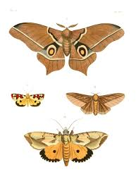 |
| Dreamstime.com | 2,533 Yellow Moths Stock Photos - Free & Royalty-Free Stock Photos from Dreamstime - Page 17 | 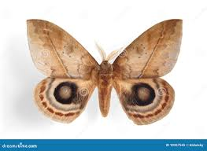 |
| Butterflies Artists | Real Saturn Moth Caligula Simla Framed Entomology Collectible Shadowbox | 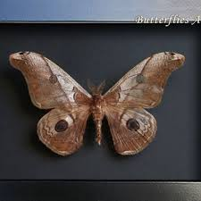 |
| Butterfly Designs USA | Automeris cinctistriga Rare Silkmoth- moth Saturniidae Framed | 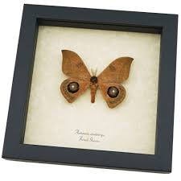 |
| eBay | Real Dried Frame Moth Entomology Insects Oddities Display Collection Gift | eBay | 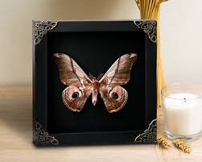 |
| cornwallpub.co.uk | Butterfly Shadow Box Atlas Moth Framed Display - Real Butterfly Taxidermy In Wooden Shadow Box For Home Decor & Oddity Collections Wood Framed Decor | 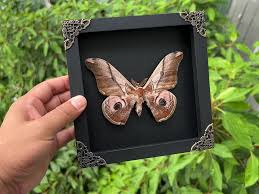 |
| 2012 Polillas de Otonga - Ecuador Stamps | 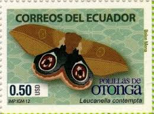 | |
| Flickr | Perry Glick 0057 | Glenn Perrigo | Flickr | 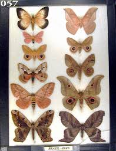 |
| Wikipedia | Caligula japonica - Wikipedia | 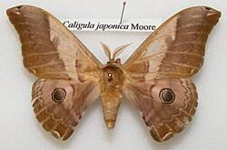 |
| Redbubble | Automeris Beckeri Merch & Gifts for Sale | Redbubble | 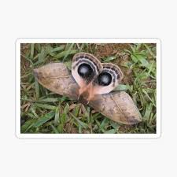 |
| Wikimedia.org | Category:Automeris arminia - Wikimedia Commons | 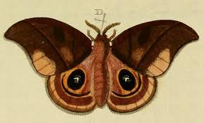 |
| eBay | Upper Volta #244 EPL Proof African Emperor Moth Gonimbrasia hecate [YT242] | eBay | 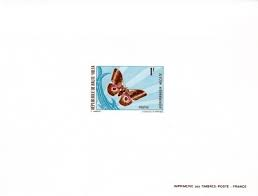 |
| 동아사이언스 | Lee Kang-woon's Insect Files] With Wings, They Could Go Anywhere... - DongA Science | 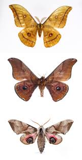 |
| Poppe Stamps | Poppe Stamps: St. Thomas and Prince Islands, 1992, 9999-08-03, Butterflies, Insects - stamps for sale by theme and country | |
| karen caracheo | karen caracheo | |
| Tumblr | death moth on Tumblr | |
| New York Daily News | Super natural! Animals with amazing powers – New York Daily News | |
| Etsy | Caio Romulus – Large Brown and Beige Preserved Butterfly | Rare South American Specimen for a Cabinet of Curiosities and Collection - Etsy Israel | |
| eBay | Framed Preserved Moth Gothic Wall Art Decor Birthday Gift For Entomology Lover | eBay | |
| Marble Crow | gemstones – Marble Crow | |
| eBay | Moths Insects MNH Stamps 2022 Niger M/S + S/S | eBay | |
| butterfly-displays.com | Caligula, simia, Saturn Moth, Large, Moth, Vietnam, pink, tan, brown, real, framed, butterfly, wedding gift, farmed raised, free shipping, shadowbox, display, taxidermy, gift, Christmas gift | |
| Hey entomology fam! I'm excited to share my 2024 Insects of Virginia case. This case highlights the insect diversity found through Virginia. All specimens in this case were collected in our backyard |